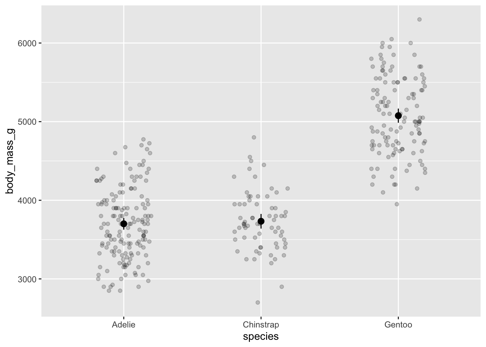
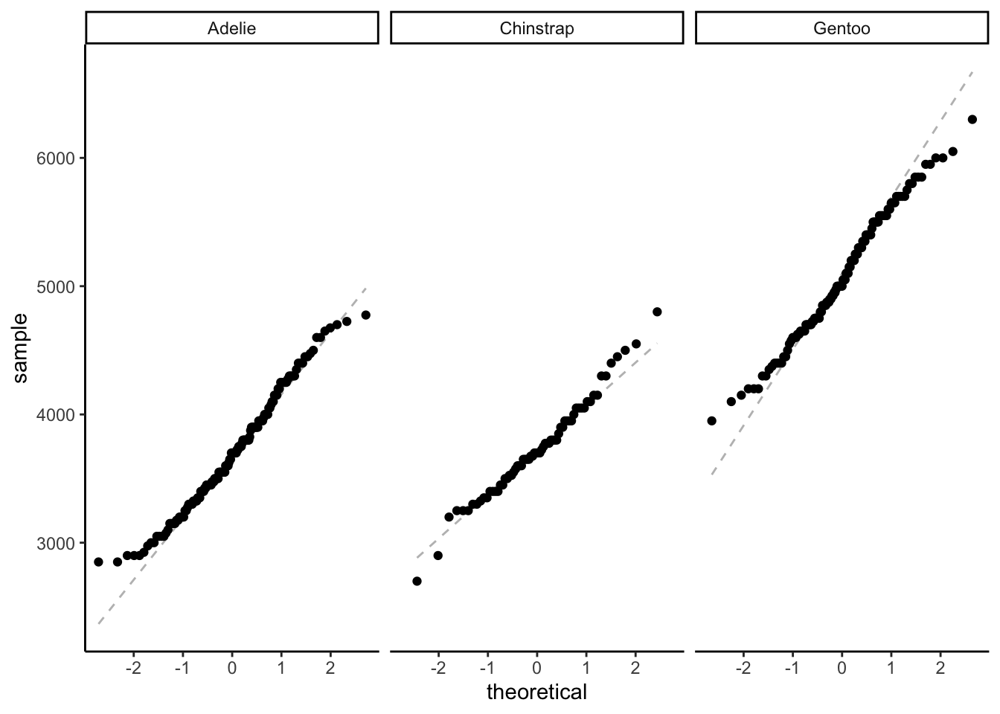
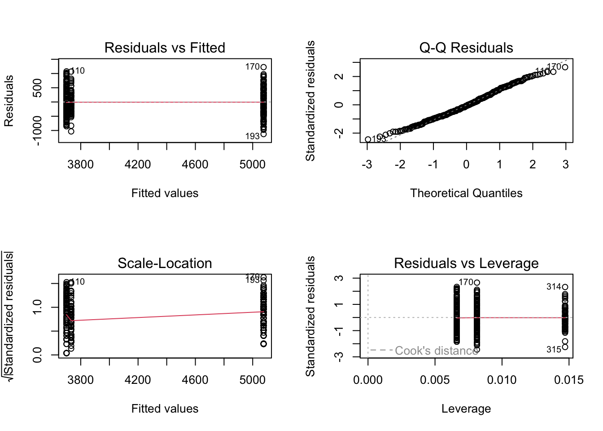
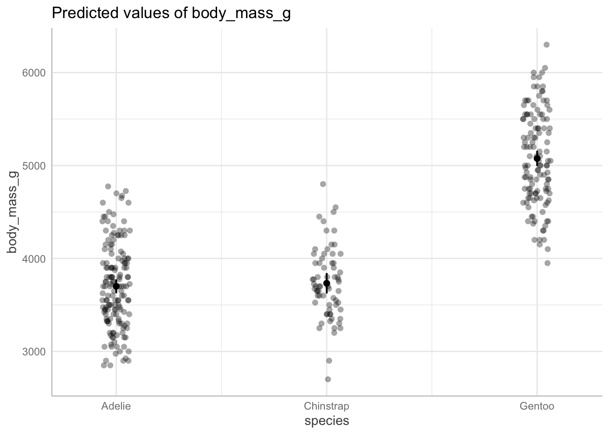

library(tidyverse)
library(palmerpenguins)
library(car)
library(ggeffects)
data(penguins)Description
Linear models share the same parametric base as ANOVAs (and t-tests!). This means that if you were to compare your results from an ANOVA to a linear model, you would see the same result.
However, the presentation of those results is slightly different, so it’s not always obvious if you’re just looking at R output. For example, with a linear model, you would see the estimates for each level of a factor relative to a reference level. Compare this with an ANOVA, where you would see sum of squares, mean squares, F-statistic, and p-value.
Prove to yourself that ANOVAs are actually just linear models!
Set up
Install palmerpenguins if you don’t have it already. Read in the data using data(penguins).
The question we will ask is: How does body mass differ between penguin species?
Problem
1. Calculate the mean body masses and lower and upper bounds of the 95% CI around the mean for each penguins species.
penguins %>%
group_by(species) %>% # group by species
reframe(mean = mean(body_mass_g, na.rm = TRUE), # calculating mean
se = sd(body_mass_g, na.rm = TRUE)/sqrt(length(body_mass_g)), # calculating SE
tval = qt(p = 0.05/2, df = length(body_mass_g), lower.tail = FALSE), # finding t-value
margin = se*tval, # calculating margin of error
conf_low = mean - margin, # calculating the lower bound of the CI
conf_high = mean + margin, # calculating the upper bound of the CI
var = var(body_mass_g, na.rm = TRUE) # also calculating variance here for efficiency
) # A tibble: 3 × 8
species mean se tval margin conf_low conf_high var
<fct> <dbl> <dbl> <dbl> <dbl> <dbl> <dbl> <dbl>
1 Adelie 3701. 37.2 1.98 73.5 3627. 3774. 210283.
2 Chinstrap 3733. 46.6 2.00 93.0 3640. 3826. 147713.
3 Gentoo 5076. 45.3 1.98 89.6 4986. 5166. 254133.
Note
Stop and think: keep in mind what those means and 95% CI around the means are!
2. Create a figure with species on the x-axis and body mass on the y-axis, with means, 95% CIs, and the underlying data.
ggplot(data = penguins, # penguins data
aes(x = species, # x-axis
y = body_mass_g)) + # y-axis
geom_point(position = position_jitter(width = 0.2, # shake points left and right
height = 0), # not up and down
alpha = 0.2) + # transparency
stat_summary(geom = "pointrange", # plot means and CIs
fun.data = mean_cl_normal) # calculating mean and 95% confidence interval
Note
Stop and think: do you think there’s a difference between species in body mass?
3. Use ANOVA to determine the difference in body mass between penguin species.
Do any assumption checks as needed.
First, Levene’s test:
leveneTest(body_mass_g ~ species, # formula
data = penguins) # dataLevene's Test for Homogeneity of Variance (center = median)
Df F value Pr(>F)
group 2 5.1203 0.006445 **
339
---
Signif. codes: 0 '***' 0.001 '**' 0.01 '*' 0.05 '.' 0.1 ' ' 1Significantly different variances in body mass between species! But looking at the calculated variances, they are for practical purposes equal.
Visually evaluating normality:
ggplot(data = penguins,
aes(sample = body_mass_g)) + # argument for a QQ plot
geom_qq_line(lty = 2,
color = "grey") + # adding a reference line
geom_qq() + # QQ
theme_classic() + # cleaner background, easier to see things
facet_wrap(~species)
Statistically evaluating normality:
adelie <- penguins %>%
filter(species == "Adelie") %>% # filtering for Adelie
pull(body_mass_g) # pulling body mass as a vector
shapiro.test(adelie)
Shapiro-Wilk normality test
data: adelie
W = 0.98071, p-value = 0.0324chinstrap <- penguins %>%
filter(species == "Chinstrap") %>% # filtering for chinstrap
pull(body_mass_g)
shapiro.test(chinstrap)
Shapiro-Wilk normality test
data: chinstrap
W = 0.98449, p-value = 0.5605gentoo <- penguins %>%
filter(species == "Gentoo") %>% # filtering for Gentoo
pull(body_mass_g)
shapiro.test(gentoo)
Shapiro-Wilk normality test
data: gentoo
W = 0.98593, p-value = 0.2336Probably ok.
penguins_anova <- aov(body_mass_g ~ species, # formula
data = penguins) # data
# show the ANOVA table: sums of squares, mean squares, f-statistic, p-value
summary(penguins_anova) Df Sum Sq Mean Sq F value Pr(>F)
species 2 146864214 73432107 343.6 <2e-16 ***
Residuals 339 72443483 213698
---
Signif. codes: 0 '***' 0.001 '**' 0.01 '*' 0.05 '.' 0.1 ' ' 1
2 observations deleted due to missingness
Note
Stop and think: what is the result of your ANOVA?
Then, do a post-hoc:
TukeyHSD(penguins_anova) Tukey multiple comparisons of means
95% family-wise confidence level
Fit: aov(formula = body_mass_g ~ species, data = penguins)
$species
diff lwr upr p adj
Chinstrap-Adelie 32.42598 -126.5002 191.3522 0.8806666
Gentoo-Adelie 1375.35401 1243.1786 1507.5294 0.0000000
Gentoo-Chinstrap 1342.92802 1178.4810 1507.3750 0.0000000
Note
Stop and think: what is the result of your post-hoc test?
4. Use a linear model to determine the difference in body mass between penguin species.
penguins_lm <- lm(body_mass_g ~ species,
data = penguins)
par(mfrow = c(2, 2)) # displaying all diagnostic plots in 2x2 grid
plot(penguins_lm) # diagnostic plots
summary(penguins_lm) # model estimates and information
Call:
lm(formula = body_mass_g ~ species, data = penguins)
Residuals:
Min 1Q Median 3Q Max
-1126.02 -333.09 -33.09 316.91 1223.98
Coefficients:
Estimate Std. Error t value Pr(>|t|)
(Intercept) 3700.66 37.62 98.37 <2e-16 ***
speciesChinstrap 32.43 67.51 0.48 0.631
speciesGentoo 1375.35 56.15 24.50 <2e-16 ***
---
Signif. codes: 0 '***' 0.001 '**' 0.01 '*' 0.05 '.' 0.1 ' ' 1
Residual standard error: 462.3 on 339 degrees of freedom
(2 observations deleted due to missingness)
Multiple R-squared: 0.6697, Adjusted R-squared: 0.6677
F-statistic: 343.6 on 2 and 339 DF, p-value: < 2.2e-16
Note
Stop and think about this result.
- How do the estimates compare to your calculated means?
- How do the F-statistic, degrees of freedom, and p-value for the model compare to the ANOVA summary?
- What components of the ANOVA summary go into the R2?
Then, get the model predictions:
ggpredict(penguins_lm,
terms = c("species")) # only predictor in the model is species# Predicted values of body_mass_g
species | Predicted | 95% CI
----------------------------------------
Adelie | 3700.66 | 3626.67, 3774.66
Chinstrap | 3733.09 | 3622.82, 3843.36
Gentoo | 5076.02 | 4994.03, 5158.00
Note
Stop and think: compare these with your calculated means and 95% CIs.
Then, plot for good measure!
ggpredict(penguins_lm, # getting model predictions
terms = c("species")) %>% # only predictor is species
# quick option to plot from ggpredict
plot(show_data = TRUE, # show the underlying data
jitter = TRUE) # shake the points around a bit